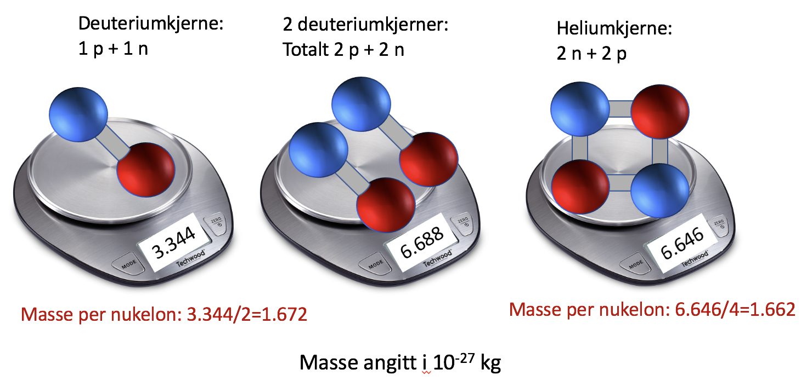

Forrige side🙂 🙁KjernemasserPADLET
OG svaret er: 
Det er ingen enkel sammenheng mellom hvilke og hvor mange kjernepartikler vi har og massen til atomkjernen, det avhenger bl.a. av bindingsenergier (sterk kjernekraft) i atomkjernen. Det enkleste vi kan gjør er å snakke om masse per nukleon, dvs. vi tar totalmassen og deler på antall nukleoner (=protoner og nøytroner). Da får vi et mål for midlere masse til en kjernepartikkel. Neste side